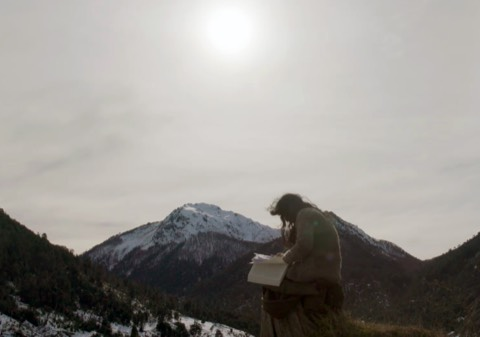
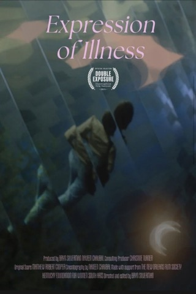

Double Exposure 2024
The tenth edition: November 7-10, 2024 · In person. Theme: “In Flux | Out of Bounds”.
Venues: The Johns Hopkins University Bloomberg Center, U.S. Naval Heritage Center, Martin Luther King Jr. Memorial Library
Programme source: the 2024 festival catalogue (PDF, in the Wayback Machine) and the festival website.
Race & civil rightsDocumentary craftFunding & distributionWar, conflict & the militaryDemocracy & electionsChina & East AsiaAfricaCriminal justice & prisons
Films
 Men of WarJen Gatien, Billy CorbenOpening Night
Men of WarJen Gatien, Billy CorbenOpening Night Dust to DustKôsai SekineCenterpiece
Dust to DustKôsai SekineCenterpiece Ernest Cole: Lost and FoundRaoul PeckSpotlight
Ernest Cole: Lost and FoundRaoul PeckSpotlight HomegrownMichael PremoClosing Night
HomegrownMichael PremoClosing Night- Acts of ReparationSelina Lewis Davidson, Macky Alston2024 · 113 min
- American Coup: Wilmington 1898Brad Lichtenstein, Yoruba Richen2024 · 111 min
 I Hope This Helps!Daniel Freed2024 · 51 min
I Hope This Helps!Daniel Freed2024 · 51 min Mistress DispellerElizabeth Lo2024 · 94 min
Mistress DispellerElizabeth Lo2024 · 94 min
Relentless MemoryPaula Rodriguez Sickert2024 · 93 min Searching for AmaniNicole Gormley, Debra Aroko2024 · 80 min
Searching for AmaniNicole Gormley, Debra Aroko2024 · 80 min The Accidental SpyAnthony Wonke2024 · 98 min
The Accidental SpyAnthony Wonke2024 · 98 min The StrikeJoeBill Muñoz, Lucas Guilkey2024 · 86 min
The StrikeJoeBill Muñoz, Lucas Guilkey2024 · 86 min
Shorts
 A Shot at HistoryErika Cohn2024 · 24 min
A Shot at HistoryErika Cohn2024 · 24 min- American Grail: A Quest for the Ivory-Billed WoodpeckerAndy Sarjahani2024 · 16 min
- Everything Is FineVanessa Kjeldsen2024 · 28 min

Expression of IllnessBryn Silverman2024 · 21 min Fox Chase BoyGerad Argeros, Kaya Moon Dillon2024 · 27 min
Fox Chase BoyGerad Argeros, Kaya Moon Dillon2024 · 27 min How to Sue the KlanJohn Beder2024 · 35 min
How to Sue the KlanJohn Beder2024 · 35 min I Am Ready, WardenSmriti Mundhra2024 · 37 min
I Am Ready, WardenSmriti Mundhra2024 · 37 min- Police DiveTeresa Carante2024 · 10 min
 Prelude of a StoryAshley Salman2024 · 17 min
Prelude of a StoryAshley Salman2024 · 17 min- Projecting ProtestThomas Clement2024 · 22 min
- Safe PlaceSamuel-Ali Mirpoorian2024 · 20 min
Forum sessions and events
Thursday, November 7, 2024
- Thu Nov 7 · 9:30 AMConversation · DX²The Morning After: Analyzing the 2024 Presidential Election ResultsAmanda Becker, Michael D. Cohen, Kate Woodsome, Eric Deggans
- Thu Nov 7 · 10:20 AMPanel · DX²Are Documentaries Journalism? When Prosecutors DecideTrevor Aaronson, Kathleen McClellan, Gordon Quinn, Seth Stern, Patricia Aufderheide
- Thu Nov 7 · 11:30 AMPanel · DX²Generative AI: Toward Best Practices in Documentary ProductionRachel Antell, Justine Bateman, Brandon Butler, Daniel Freed, Graham Sack
- Thu Nov 7 · 1:30 PMPanel · DX²Cross Country: Unpacking Regionalism in Documentary FilmmakingAaron Asbury, Laura Deutch, Ryan Pearson, Ouida Washington, Nick Price
- Thu Nov 7 · 2:45 PMPanel · DX²Can Audiences Trust Us?Nina Alvarez, Margaret “Mishi” Ebrahim, Erin Texeira, Sally Lehrman, Noland Walker, Eric Deggans, Mishi Ebrahim
- Thu Nov 7 · 4:00 PMConversation · DX²Into the Deep Blue: A Conversation with the Outlaw Ocean ProjectIan Urbina, Ben Blankenship, Sig Libowitz
Friday, November 8, 2024
- Fri Nov 8 · 9:30 AMPanel · DX²Envisioning the Future: Sustainable Solutions for FilmmakersLailanie Gadia, Brian Newman, Jacqueline Olive, Zeena Starbuck, Malkia Lydia
- Fri Nov 8 · 10:45 AMPanel · DX²Personal Stories, Universal Impact: The Power of Investigative FilmmakingGerad Argeros, Debra Aroko, Erika Cohn, Emma D. Miller, Rajal Pitroda, Russell Leigh Sharman, Russell Leigh Sharman
- Fri Nov 8 · 12:00 PMScreening eventShorts: Illuminating PerspectivesLynne Adrine
- Fri Nov 8 · 1:00 PMPanel · DX²Mining and Contributing to Archives: Crafting the Future of Documentary StorytellingMacky Alston, Selina Lewis Davidson, Gaia de Simoni, Ben Loeterman, Teresa Murphy, Rachel Antell
- Fri Nov 8 · 2:30 PMPanel · DX²Distribution in Flux: Reimagining and Thriving in the New EraDaniel Cantagallo, Amy Hobby, Christie Marchese, Jeffrey Winter, Laetitia Doyle
- Fri Nov 8 · 3:50 PMConversation · DX²Working with Participants in Investigative Film: A Conversation with Raoul PeckRaoul Peck, Natalie Bullock Brown
Saturday, November 9, 2024
- Sat Nov 9 · 10:00 AMWorkshopWorkshop: Backpack Journalism for FilmmakersBill Gentile
- Sat Nov 9 · 10:00 AMWorkshopWorkshop: Self-Care for Filmmakers: The Trauma Aware ToolkitJudith Matloff
- Sat Nov 9 · 12:00 PMScreening eventShorts: Reframing the South (DX Reel South Award Finalists)Brent Lambert-Zaffino, Nick Price
- Sat Nov 9 · 12:45 PMWorkshopWorkshop: EditLife - Creating Short ContentRegi Allen
- Sat Nov 9 · 12:45 PMWorkshopWorkshop: Working Responsibly with WhistleblowersMargaux Ewen, Mary Inman, Peter Klein, Jennifer Nelson
Sunday, November 10, 2024
- Sun Nov 10 · 1:30 PMScreening eventShorts: Breaking the Mold: Defying Conventional Narrative ShortsNicki Mayo
Date not listed
- PitchDX Access | DX PitchRachel Antell, Aaron Asbury, Natalie Bullock Brown, Laura Deutch, Laetitia Doyle, Margaret “Mishi” Ebrahim, Margaux Ewen, Eric Ferrero…
Awards
- DX Reel South Award
People
Filmmakers 35
- Macky Alston
- Gerad Argeros
- Debra Aroko
- John Beder
- Teresa Carante
- Thomas Clement
- Erika Cohn
- Billy Corben
- Selina Lewis Davidson
- Kaya Moon Dillon
- Rachel Falcone
- Daniel Freed
- Jen Gatien
- Nicole Gormley
- Lucas Guilkey
- Johnny Howorth
- Vanessa Kjeldsen
- Brad Lichtenstein
- Elizabeth Lo
- Emma D. Miller
- Samuel-Ali Mirpoorian
- Matthew Modine
- Smriti Mundhra
- JoeBill Muñoz
- Raoul Peck
- Michael Premo
- Adam Rackoff
- Rachel Raney
- Yoruba Richen
- Ashley Salman
- Andy Sarjahani
- Kôsai Sekine
- Paula Rodriguez Sickert
- Bryn Silverman
- Anthony Wonke
Moderators 24
- Lynne Adrine
- Rachel Antell
- Patricia Aufderheide
- Laura Blumenfeld
- Natalie Bullock Brown
- Eric Deggans
- Laetitia Doyle
- Patricia Finneran
- Lana Garland
- Ronnie Greene
- Dana Hedgpeth
- Peter Klein
- Brent Lambert-Zaffino
- Sig Libowitz
- Malkia Lydia
- Nicki Mayo
- Dan Merica
- Ron Nixon
- Nick Price
- Graham Sack
- Diana Jean Schemo
- Amy Schwartz
- Russell Leigh Sharman
- Kate Woodsome
Panelists & speakers 77
- Trevor Aaronson
- Macky Alston
- Nina Alvarez
- Rachel Antell
- Gerad Argeros
- Debra Aroko
- Aaron Asbury
- Justine Bateman
- Amanda Becker
- Erica Berenstein
- Ben Blankenship
- Natalie Bullock Brown
- Brandon Butler
- Daniel Cantagallo
- Naveen Chaubal
- Michael D. Cohen
- Erika Cohn
- Selina Lewis Davidson
- Eric Deggans
- Laura Deutch
- Laetitia Doyle
- Margaret “Mishi” Ebrahim
- Mishi Ebrahim
- Margaux Ewen
- Rachel Falcone
- Eric Ferrero
- Daniel Freed
- Lailanie Gadia
- Jen Gatien
- Lucas Guilkey
- Kim Haas
- Amy Hobby
- Melissa Houghton
- Johnny Howorth
- Brendan Hubbard
- Mary Inman
- Peter Klein
- Sally Lehrman
- Brad Lichtenstein
- Ben Loeterman
- Christie Marchese
- Judith Matloff
- Kathleen McClellan
- Emma D. Miller
- Matthew Modine
- Michael Montgomery
- Teresa Murphy
- JoeBill Muñoz
- Yuima Nakazato
- Jennifer Nelson
- Brian Newman
- Jacqueline Olive
- Ryan Pearson
- Raoul Peck
- Amanda Pike
- Rajal Pitroda
- Michael Premo
- Nick Price
- Gordon Quinn
- Rachel Raney
- Yoruba Richen
- Bernardo Ruiz
- Michael Saavedra
- Ricardo Sandoval-Palos
- Steve Sapienza
- Kôsai Sekine
- Russell Leigh Sharman
- Paula Rodriguez Sickert
- Gaia de Simoni
- Zeena Starbuck
- Seth Stern
- Erin Texeira
- Almudena Toral
- Ian Urbina
- Noland Walker
- Ouida Washington
- Jeffrey Winter
Workshop leaders 7
Film subjects 11
- Simon Ali
- Gerad Argeros
- Mike Berry
- Ernest Cole
- Jerod Draper
- Jordan Goudreau
- Yuima Nakazato
- Nita Patel
- John Henry Ramirez
- Blerim Skoro
- Wang Zhenxi
Festival team 20
- Bonnie R. Cohen
- Workhorse Collective
- Margaret “Mishi” Ebrahim
- Together Films
- Patricia Finneran
- Theodore Frank
- Eric Fryer
- Lana Garland
- Peter Haggert
- Olivia Jimenez
- Travis Hare, KRPR
- Brent Lambert-Zaffino
- Ron Nixon
- Brett A. Pulley
- Diana Jean Schemo
- JoAnne Scribner
- Jessica Skorich
- Melinda Thompson
- Rosana Hemakom Vollmerhausen
- Julia Wasson